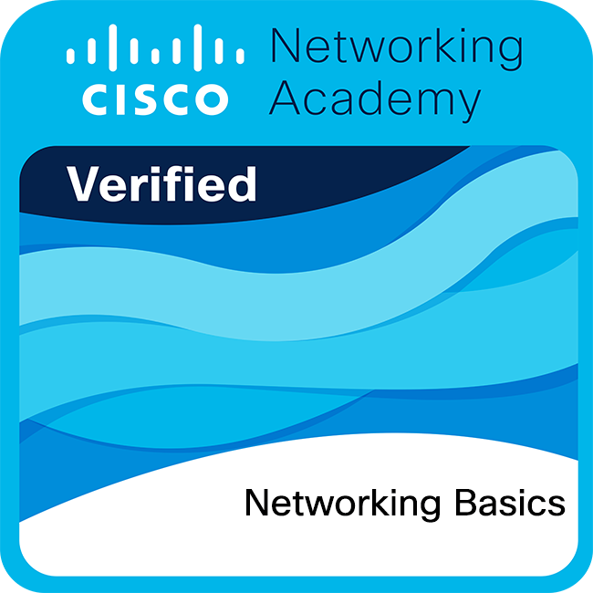
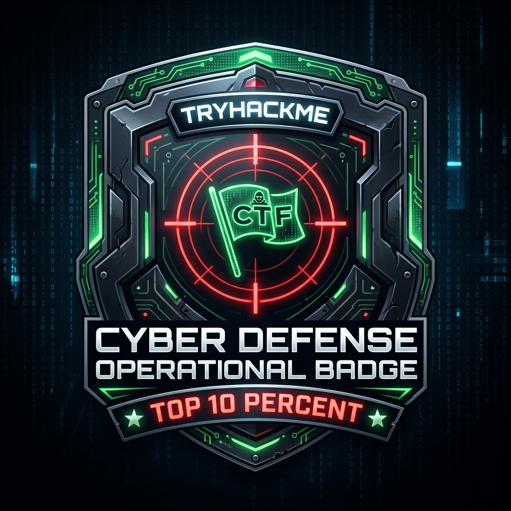

SAGNIK MANDAL
[B.TECH CSE CANDIDATE @ FIEM 2026–2030]
Computer Science Engineering student and cybersecurity enthusiast focusing on Linux system administration, Python security scripting, network packet analysis, and CTF lab practice.
Building practical skills in Linux, networking, Python and cybersecurity through hands-on labs and projects.
[B.TECH CSE @ FIEM 2026–2030]
[B.TECH CSE CANDIDATE @ FIEM 2026–2030]
Computer Science Engineering student and cybersecurity enthusiast focusing on Linux system administration, Python security scripting, network packet analysis, and CTF lab practice.
This platform serves as a personal technical portfolio and learning journal authored by Sagnik Mandal. Its core purpose is to connect theoretical Computer Science fundamentals with practical cybersecurity skills—documenting lab writeups, Linux administration notes, Python security scripts, and network packet analysis.
I’m a Computer Science Engineering student and security enthusiast interested in Linux administration, Python scripting, and network packet analysis.
Combining academic coursework at FIEM with practical hands-on labs, I focus on understanding computer systems from foundational operating system concepts to network protocols.
B.Tech CS Engineering Student
Earned a global Top 10% rank on TryHackMe by completing 50+ practical lab rooms covering Linux administration, web security, and network analysis.
Authored 15+ open-source Python scripts for port scanning, socket communication, packet analysis, and AES/XOR encryption.
Completed professional training certificates including Google Cybersecurity Professional, Cisco Networking Basics, and LPI Linux Essentials.
Pursuing B.Tech in Computer Science Engineering at FIEM with focus on Data Structures, Algorithms, Operating Systems, and Computer Networks.
Configured Ubuntu and Kali Linux environments with basic system hardening, POSIX shell scripts, systemd services, and file permission rules.
Built a responsive vanilla HTML/CSS/JS portfolio featuring a custom Matrix rain canvas animation, interactive terminal CLI shell, and semantic structure.
Comprehensive professional certificate training covering SIEM tools (Chronicle/Splunk), Linux CLI security, Python threat automation, network protocol analysis, and SOC incident response standards.

Coursework and hands-on lab training covering OSI 7-Layer model architecture, IPv4/IPv6 CIDR subnetting, TCP/UDP transport protocol handshakes, router configuration, and packet routing fundamentals.
Demonstrated coursework in POSIX bash shell scripting, system permission management (chmod/chown/SUID), process isolation, systemd service management, and Linux server hardening.

Completed 50+ practical CTF laboratory rooms covering web application security (OWASP Top 10), Linux privilege escalation, and Wireshark network packet analysis.
Python packet inspection script designed to analyze local traffic headers and protocol behavior.
Virtual laboratory environment for command-line navigation, system administration, and network utilities.
Python programs demonstrating classic encryption algorithms, string ciphers, and hash functions.
Custom script testing open port availability and basic network endpoint security reachability.
Security documentation and shell setup scripts for enforcing baseline security policy on Ubuntu OS.
Problem-solving code exercises focused on functions, conditionals, loops, and data structures.
Direct links to featured technical writeups, laboratory POCs, and open-source code repositories categorized by domain expertise and technical standards:
In-depth technical breakdown of raw packet manipulation, IP header parsing, SYN flag verification, and Wireshark PCAP logging routines.
Shell script automation suite enforcing SSH key-only auth, UFW firewall rules, systemd service minimization, and SUID/SGID audit permissions.
Mathematical foundation and implementation of symmetric block ciphers, initialization vectors (IVs), padding schemes, and key generation safety.
Custom Python scanner leveraging non-blocking socket I/O, banner grabbing algorithms, and port state classification (Open/Closed/Filtered).
Step-by-step penetration testing writeup covering ProFTPd exploit chain, Samba share enumeration, and Path variable privilege escalation.
Comparative analysis of time/space complexity (\(O(n \log n)\) sorting, graph traversal algorithms, binary trees) and Python memory optimization.
Currently pursuing B.Tech in CSE. Developing strong foundations in computer science core principles, Linux, networking, Python, and cybersecurity.
Higher Secondary education focused on Science and Mathematics, laying the baseline analytical skills for engineering.
Security research, lab scripts, and technical writeups in this portfolio reference globally recognized cybersecurity standards, RFC specifications, and open technical documentation:
National Institute of Standards and Technology guidelines for identifying, protecting, detecting, responding to, and recovering from cyber threats.
Open Web Application Security Project standards for web application security risks, API vulnerabilities, and secure coding practices.
Globally accessible knowledge base of adversary tactics, techniques, and procedures (TTPs) based on real-world threat intelligence.
Cybersecurity & Infrastructure Security Agency's authoritative catalog of Known Exploited Vulnerabilities for threat prioritization.
International Standard for Information Security Management Systems (ISMS) defining security controls and operational risk management.
Internet Engineering Task Force open specifications (RFC 793 TCP, RFC 7540 HTTP/2, RFC 8446 TLS 1.3) governing network communications.
Center for Internet Security consensus-based hardening guidelines for securing operating systems, servers, and network devices.
Forum of Incident Response and Security Teams standard for assessing vulnerability severity, threat metrics, and impact scores.
Official Linux system calls, POSIX standards, shell scripting guides, and system administration manuals.
Official Python Software Foundation guidelines for secure socket creation, cryptographic modules, and string handling safety.
Feel free to connect regarding cybersecurity research, Linux operations, Python projects, or networking discussions.